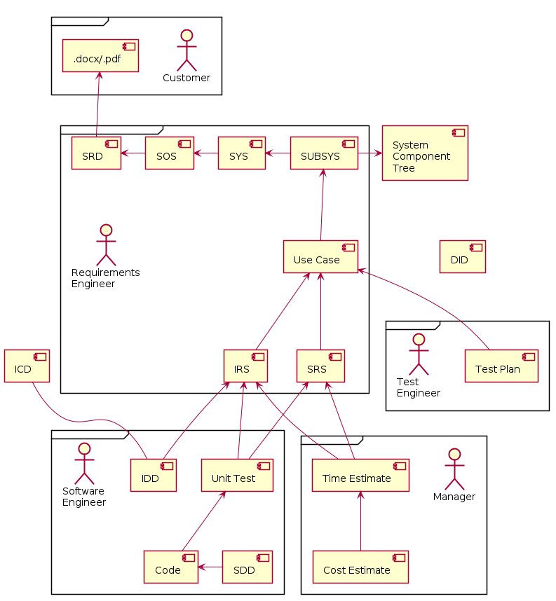
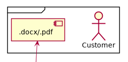
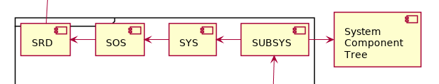
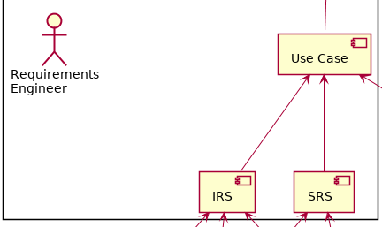
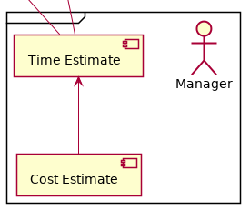
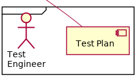
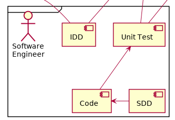

COhPy Presentation - 2018-05-21
(Day-Job) Presentation - 2019-03-08 (part 1)
2019-03-15 (part 2)

Last Week: - Large projects into smaller projects - Presentation, Application, Control, Data - Components, Subsystems, Systems, SOS - Reduce knowledge required of other code - Facade design pattern - UML Diagrams
"Process" is not a four letter word. -Cost EffectiveAdd Value - Productivity - Communication - Innovation - Democratic Part 1 = less code reading Part 2 =no code reading - Validatation before coding
Diagram: Software Development Process

~20 boxes in 30 minutes? - Disclaimer - More infos - Facilitator?
Source of the "requirements" - Reasonable - Ambiguous - Conflicting - Missing - Impossible

SRD = System Requirements Document - Scraped text from customer doc System Component Tree - Hierarchy of components to be built SOS = System Of Systems SYS = System SUBSYS = Sub-System - Customer requirements cleanup - Define component responsibilities

Use Case
- Story about how the system is used
- Characters
- Motivation
- Plot
- Illustrated (UML Diagrams)
IRS = Interface Requirements Specification
- List of API methods and data
- external
- between subsystems
SRS = Software Requirements Specification
- List of behaviors
- When in a certain state,
- and this message is received,
- matching these criteria,
- what shall happen next.
Software Engineer
- Review
- Add estimated effort
- Revise (optional)
- Approve (accept)

Requirements
- Items in a list
- Small, simple
- Good estimates
- 2x 30h >> 30x 2h
- Done or Not Done = %progress
- Prioritize
- Share
- Feature Creep
Specification
- This exact list of reqs

System Integration Tests - Input: Use Cases (and IRS, SRS) - Output: Test Plans Beyond Developer Testing - External, system behavior - Experts at breaking things Other - Test Automation Tools - Load / Performance Tests

Code & Unit Test IDD = Interface Design Document - One doc per interface SDD = Software Design Document - One section per component - UML Diagrams (start with reqs) - Additional text

DID = Data Item Description - Templates and advice for each artifact ICD = Interface Control Document - Index of all IDDs and owners
New System - Validate before coding Maintenance - What should happen - Identify responsible component(s) Extend System - Or iterative development - SDD for reference Innovative Proposals - Communicate ideas - Complete design? New Hires - Learn the system